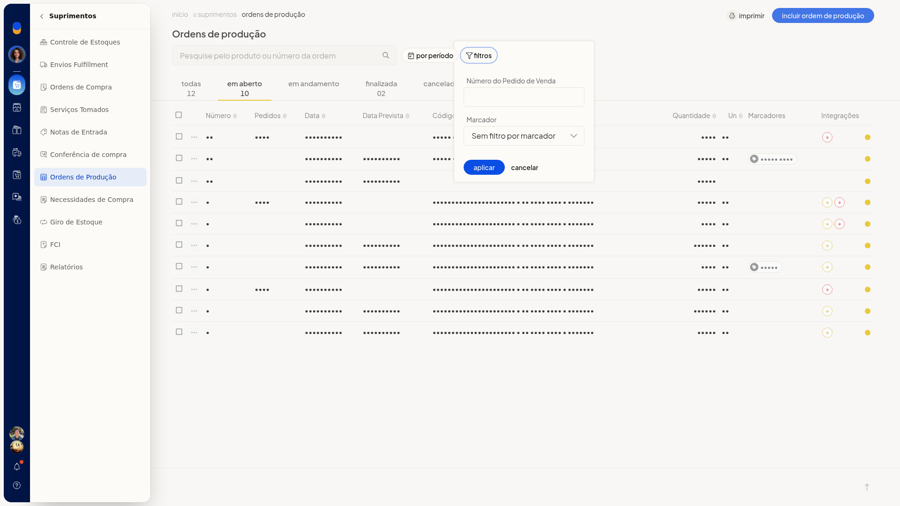

Produtos sob encomenda
No ERP da Olist, as ordens de produção ligadas a uma venda aparecem identificadas na lista. Com isso, você acompanha produtos sob encomenda: reconhece a origem pela venda, vê se o estoque já foi lançado e localiza a ordem pelo número do pedido.
A consulta fica em Suprimentos > Ordens de Produção.
Pré-requisitos
- A ordem já precisa estar ligada a uma venda para ser reconhecida como sob encomenda nesta tela.
Importante
- O selo V (Gerada pela Venda) e o selo E (Estoque lançado) podem aparecer juntos na mesma linha.
Instruções
-
Acesse Suprimentos > Ordens de Produção.

-
Escolha a aba Todas, Em aberto, Em andamento, Finalizada ou Cancelada. Cada aba mostra a situação e a quantidade de ordens.

-
Na linha da ordem, confira o selo V, com o texto Gerada pela Venda. O selo E indica Estoque lançado.
-
Abra os filtros da lista.

-
Informe Número do Pedido de Venda. O campo não é obrigatório.
-
Clique em Aplicar. A lista mostra as ordens do filtro escolhido, sem alterar os registros.
Resultado
Na lista, a ordem gerada pela venda aparece com o selo V. Quando o estoque já foi lançado, a mesma linha também pode trazer o selo E.